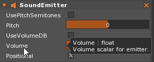
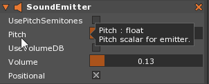
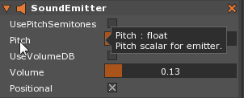
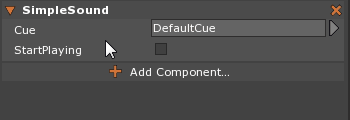

SoundEmitter and SimpleSound
Zero engine has three main audio components: SoundListener, SoundEmitter, and SimpleSound. This page will focus on the SoundEmitter and SimpleSound components, which are grouped together because SimpleSound requires a SoundEmitter component to work. These two components comprise the most basic way to play a SoundCue in a level.
Common Uses
- Adjusting the Volume and Pitch of SoundCues
- Play, Pause and Stop a SoundCue at runtime
- Set up a SoundCue to play at object initialization
Using SoundEmitter
While a SoundEmitter component is not necessary for playing sounds, it is recommended for adjusting the properties of any SoundCues in use. There are three ways to choose a SoundCue to play: using the SimpleSound component, using functions available in Zilch through the SoundEmitter, and using functions available in Zilch through the SoundSpace.
The SoundEmitter component must be attached to an object for that object to emit a sound. There is no restriction on the types of objects on which sound emitters may be placed, so that they can be put on an enemy, or an empty Transform, or even the LevelSettings object. Through the Properties window both the Pitch and Volume may be changed, as well as whether or not the SoundEmitter uses a 3D position or can always be heard by all SoundListeners regardless of distance. There are also other variables and functions available through code.
Volume
Ranges of Volume and Pitch properties
While there are ranges given for Volume, VolumeDB, Pitch and PitchSemitones below, these properties can accept values both above and below the ranges stated if either entered numerically through the property field or through a ZilchScript. The ranges specified are the limits if only the slider is used to adjust the properties, and are the recommended ranges of the properties.
The Volume property allows the volume percentage of the SoundCue that has been chosen to be played to be set on a scale of 0.0 to 1.0. The percentage is represented as a scalar between 0.0 and 1.0; that is to say, at 1.0 the volume is at 100%, while at 0.0 the volume is at 0%. If UseVolumeDB is set to true then the Volume property is replaced with VolumeDB, which adjusts the volume of the SoundCue by decibel levels instead and has a range between -32 and 6. Volume can be changed in two ways: clicking directly on the slider at the position relative to the sound level wanted, or by right-clicking on the bar the level may be entered numerically, both demonstrated below:

Changing Volume by Clicking
Changing Volume Numerically
As stated before, VolumeDB uses decibels in place of a floating point and so it adjusts volume slightly differently. A decibel level of 0.0 is considered the full volume of the imported Sound being played and is equivalent to a Volume of 1.0. Decibels, however, either double or halve the current volume level for every multiple of 6 that it is adjusted. For instance, 6.0 is comparable to 2.0 (twice as loud) and 12.0 is equivalent to 4.0 (four times as loud), while -6.0 is equal to 0.5 (half volume) but -12 is the same as 0.25 (one quarter volume).
Pitch
The Pitch property allows the pitch (or the perceived change of frequency) to be changed higher or lower based on an scalar ranging from -2.0 to 2.0. If UsePitchSemitones is set to true then the Pitch property is replaced with PitchSemitones and uses a range of -24 to 24 instead. Changing the pitch results in either a higher or lower tone relative to positions on the standard musical scale; i.e. higher or lower frequencies will cause the same cue to sound like it is in a different key. The pitch may be changed in Property window in the exact same way as with volume, as demonstrated below:
Changing Pitch by Clicking

Changing Pitch Numerically

Both Pitch and PitchSemitones will adjust the frequency of the given sound, with Pitch either doubling or halving with every whole number and PitchSemitones every multiple of 12. For example, a Pitch of 1 and PitchSemitone of 12 both doubly the frequency while a Pitch of -2 and a PitchSemitone of -24 will both quarter the frequency.
Positional
The Positional boolean determines whether or not the sound played via this SoundEmitter uses a 3D position in the the Space. If set to true then any SoundListeners within range of the MaxDistance property of the SoundCue played will be able to hear it, and it may use a dropoff effect to the sound played, which may lessen the volume as the SoundListener moves further from its position. If set to false then all listeners will be able to hear SoundCue played regardless of distance. Having Positional set to false is best used for music intended to be used as a background track, where the desired effect is to be heard regardless of where the player is in the level.
The Properties and Functions of SoundEmitter
Using SimpleSound
SimpleSound, like its name suggests, is a simple way to play a sound. Choose a SoundCue, set the Property StartPlaying to true, and the cue will play. This straightforward approach is best suited to sounds that will be looped throughout the level such as background music. The two properties available in the Property window are SoundCue, which assigns the cue to play, and StartPlaying, a boolean that when set to true will start the cue whenever the component is initialized. SimpleSound does have SoundEmitter as a Dependency so the SoundEmitter component will need to be added first before the SimpleSound component can be.
Choose the SoundCue to play by clicking on the left-clicking on the bar to the right of “Cue”, which by default, has the cue DefaultCue in it. Then scroll down to find the cue desired and left-click again to select it, like so:
